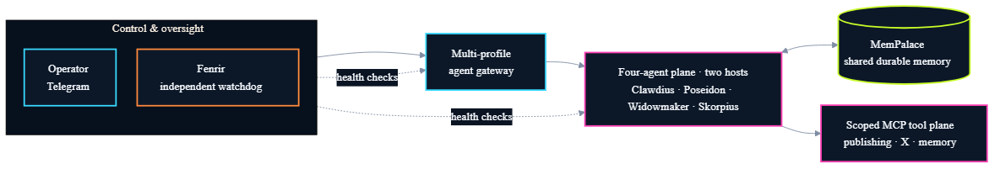

AI systems builder Operator Engineer
Forward-Deployed AI Engineer
I turn messy business operations into bounded, auditable AI systems—from prototype through production.
- 7+
- months in production
- 5,800+
- logged agent events
- 50+
- days without a sync gap
- 500+
- regulated-service clients
Flagship system · Production
Trident Protocol
Four agents across two hosts with shared memory, scoped tools, independent monitoring, and earned autonomy.
Read the production case study
Governed workflow
Argos Vendor Command
Multi-agent vendor-risk workflow with a seven-state machine, dual-specialist review, weighted policy, and human override.
- Explicit transition gates
- Nine-domain risk policy
- Versioned evidence record
Shipped product
TraceReady
Browser-side traceability cleanup that turns messy farm files into deterministic buyer-ready evidence packs.
- CSV, KML, and GeoJSON
- Raw data stays browser-side
- Structured audit-ready exports
Operator context
Engineering shaped by real consequences.
I have spent 12+ years building and operating businesses where errors affect customers, compliance, cash flow, and trust.
That background changes how I build AI systems: permissions are explicit, regulated data stays outside the agent plane, important decisions leave evidence, and every autonomous loop has a stop condition.
- Python
- TypeScript
- Node.js
- REST APIs
- Docker
- Tailscale
- LLM routing
- MCP tooling
Open to the right deployment problem
Need an engineer who can operate in the mess?
I am targeting forward-deployed engineering, AI deployment, agent-infrastructure, and enterprise tooling roles.